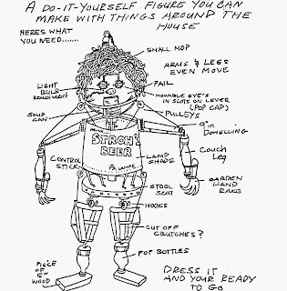
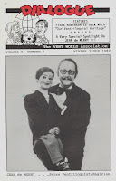

Build Your Own?
8/17/2011
{kind=link}

Do-It-Yourself Figure You Can Make With Things Around The House
(Condensed from the 1989 Winter issue of Dialogue.)
Tim Selberg recently thumbed through an old scrapbook and came upon a sketch he did at the age of 12. It was intended to be a joke at the time, but looking back now, Tim says, "It's even more ridiculous!
"Don't ask me why it says 'Drink ... Stroh's Beer' and 'PS Lamps' on the the lamp shade, because I have no idea (and I certainly wasn't hitting the bottle at 12 and I don't recall ever seeing a shade quite like that even though my childhood was a little abnormal!)
"Since looking at this I've thought of some nice updates...I think ping pong paddles attached by the handles to the pop bottles would make better feet. I would also replace the arms and legs with Slinkys so that figure could convincingly walk down stairs with just a simple shove! What a show stopper!
A comical spitting device could be installed utilizing a household fire extinguisher hidden within the body for loads of fun! A garden hose would work nicely if the act were done outdoors and near a faucet, and there would be the added benefit of an endless supply of water!
"...I'm disturbed by the fact that I'm beginning to like these ideas ...."
{kind=link}

* * * * *
From Mr. D: Me, too! The rest of the story and much more, including a spotlight article on Jean deMerry (cover), was included in this 1989 issue of Dialogue. I have one original copy to award today, and the winner is: Steve Barry (MD).